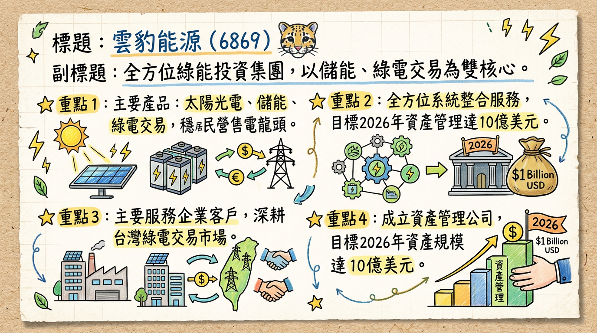
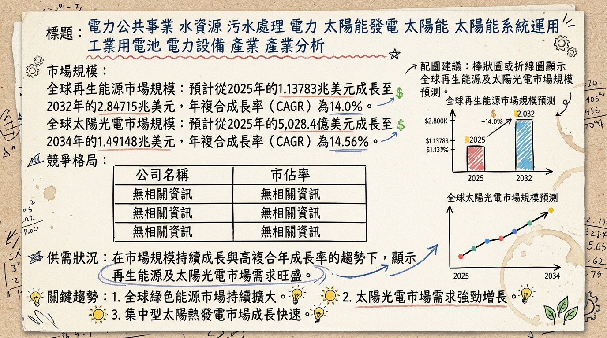
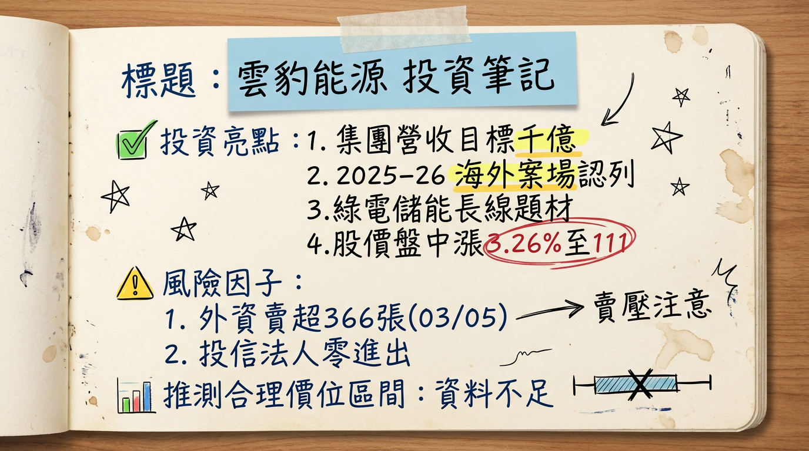

6869 雲豹能源 深度研究報告
一句話摘要
雲豹能源（6869）為全方位綠能整合投資集團，以儲能與綠電交易為雙核心引擎，2025年合併營收達74.69億元創歷史新高，年增96.9%，預計2026年邁入「高股利時代」，配發率目標達八成。公司積極佈局海外市場，複製光電與儲能專業能力至日本及東南亞，並計畫透過旗下子公司天能綠電與台普威能源的上市櫃，加速集團營運成長，目標十年內營收達千億元規模，奠定亞洲低碳新能源整合集團領導地位。
公司概覽
雲豹能源是一家全方位的綠能整合投資集團，業務涵蓋再生能源電廠開發、投資、建置及維運管理。近年來已成功轉型，以「儲能」與「綠電交易」為雙核心獲利引擎。
核心產品與服務：
- 太陽光電： 電廠開發、投資、建置與維運。
- 儲能： 提供儲能系統工程服務，並建置大型儲能案場，透過子公司台普威能源。
- 綠電交易/售電平台： 透過子公司天能綠電提供綠電交易服務，穩居國內民營售電業龍頭。
- 水處理： 提供水處理工程服務，帶來穩定營收。
- 風力發電： 策略性投資離岸風電產業鏈。
- 永續循環/循環經濟： 新佈局業務，包含有機質廢棄物再利用及生質能蒸氣廠等。
- 資產管理： 成立「雲豹資產管理公司」，目標到2026年達成10億美元資產規模。
- 智慧電能與AI能源管理： 提供智慧電能、AI能源管理、碳顧問與零碳技術等。
2025年營收結構（依業務劃分）：
| 業務類別 | 營收金額 (新台幣億元) | 佔比 (%) |
|---|
| 儲能工程 | 29.4 | 39 |
| 售電事業 | 23.8 | 32 |
| 維運、水處理及其他業務 | 21.49 | 29 |
| 總計 | 74.69 | 100 |
核心競爭優勢
綠電交易龍頭地位： 旗下子公司天能綠電已簽訂超過250億度綠電長約，並穩居國內民營售電業第一，具備強大市場議價能力與穩定現金流。
全方位綠能整合能力： 業務涵蓋太陽光電、儲能、綠電交易、水處理、風電及循環經濟，能提供客戶一站式解決方案，降低單一業務風險。
大型儲能案場實績： 擁有全台最大光儲工程統包案及多個大型儲能案場建置經驗，子公司台普威能源為儲能系統整合領導者。
積極海外市場拓展： 成功複製經驗至日本及東南亞（菲律賓、泰國、越南），多元化營收來源，掌握區域能源轉型商機。
高科技客戶群基礎： 綠電交易客戶涵蓋半導體、光電、金融等高耗能、高綠電需求產業，受益於AI與資料中心擴張趨勢。
子公司資本市場助力： 天能綠電預計轉上櫃、台普威能源預計登錄興櫃，將有助於提升集團評價與籌資能力。
財務分析
近六個月月營收趨勢
| 月份 | 金額 (新台幣千元) | 月增率 MoM (%) | 年增率 YoY (%) |
|---|
| 2026年1月 | 355,674 | -65.32 | 23.19 |
| 2025年12月 | 1,025,477 | 149.51 | 112.13 |
| 2025年11月 | 411,004 | -24.14 | 53.13 |
| 2025年10月 | 541,764 | -35.4 | 32.9 |
| 2025年9月 | 838,660 | 160.11 | 276.46 |
| 2025年8月 | 322,420 | -56.69 | 76.83 |
2025年季度數據
| 季度 | 季營收 (新台幣億元) | 毛利率 (%) | 營業利益率 (%) | EPS (新台幣元) |
|---|
| 2025年第三季 | 19.1 | 10.21 | 1.84 | -0.49 |
| 2025年第四季 | 資料未提供 | 資料未提供 | 資料未提供 | 資料未提供 |
全年度營收與 EPS
| 年度 | 全年營收 (新台幣億元) | EPS (新台幣元) | 備註 |
|---|
| 2024年實際 | 37.93 | 8.89 | 歷史新高 |
| 2025年預估 | 74.69 | 5.49 | CMoney預估 (74.69億元) / 康和證券預估 (5.49元) |
| 69.52 | 3.03 | 康和證券預估 (69.52億元) / 國泰證券預估 (3.03元) |
| 73.00 | 0.93 | 國泰證券預估 (73億元) / 統一證券預估 (0.93元) |
| 71.76 | | 統一證券預估 |
法說會重點
最近一次法說會日期： 2025年11月20日
管理層對各產品線的具體Guidance：
* 截至2025年10月，天能綠電合約總度數已達250億度，預計未來三到五年將翻倍成長至500億度。
* 預計2025年轉供4.3億度，2026年增加至6.6億度，2027年進一步提升至8.8億度。
* 旗下台普威能源與錸寶科技合作推進60MW/205.6MWh大型儲能案場，工程總金額約新台幣30億元，預計2026年上半年商轉。
* 日本多處儲能案場已陸續開工，預期可貢獻2026年全年營收約10-15%。
* 2026年日本儲能開工量預計提升至78MW，2027年日本目標開發儲能案場容量達262MW。
* 集團累積開發及自持容量已突破1GW。
* 預估2026年光電目標開工153MW。
* 海外市場方面，開發中容量合計超過500MW。
- 水處理： 預計2025年至2027年每年可貢獻約新台幣9至10億元營收。台北市濱江水資源再生中心案已於2025年第一季開工。
管理層給出的下季/下半年Guidance：
- 管理層表示，2025年是雲豹能源未來三年高度成長的元年。
- 預計2025年第四季日本市場將有突破性進展，可望貢獻集團整體營收5-10%。
- 公司鎖定2026年邁入「高股利時代」，配發率預計達8成。
- 2026年營收期望再創新高，預期將迎來「豐收之年」。
券商觀點
券商目標價與評等
| 券商名稱 | 目標價 (新台幣元) | 評等 | 日期 |
|---|
| 康和證券 | 152 | 買進 | 2025年10月2日 |
| 國泰證券 | 117 | 買進 | 2025年12月2日 |
| 統一證券 | 116 | 買進 | 2025年12月1日 |
券商對 2025-2026年 EPS 預估
| 券商名稱 | 2025年 EPS 預估 (新台幣元) | 2026年 EPS 預估 (新台幣元) |
|---|
| 康和證券 | 5.49 | 未提供 |
| 國泰證券 | 3.03 | 未提供 |
| 統一證券 | 0.93 | 未提供 |
目前未找到雲豹能源（6869）近期有重大調升或調降評等的具體報告，現有券商報告多維持「看多」評等。
財報深度分析
利潤率趨勢 (近七季)
| 年度/季別 | 毛利率 (%) | 營業利益率 (%) | 稅前淨利率 (%) | 稅後淨利率 (%) |
|---|
| 2025Q3 | 10.21 | 1.84 | -2.95 | -3.71 |
| 2025Q2 | 8.38 | 2.23 | 22.64 | 21.26 |
| 2025Q1 | 11.16 | -2.10 | -26.91 | -26.30 |
| 2024Q4 | 8.93 | -7.03 | 83.81 | 85.41 |
| 2024Q3 | 13.19 | -10.14 | -2.28 | 0.15 |
| 2024Q2 | 18.66 | 1.77 | 14.07 | 13.51 |
| 2024Q1 | 23.01 | 4.64 | 5.86 | 5.14 |
- 2025年前三季營收成長與營業利益提升：主要受惠於儲能案場陸續完工與綠電交易快速成長所帶動。特別是2025年第三季綠電交易營收達6.4億元，年增118%，顯示穩健成長。
- 2025年第三季轉虧：雲豹能源於2025年第三季因受丹妮絲等災損，導致單季再度陷入虧損，每股虧損0.49元。
- 產品組合影響：在2025年上半年，工程收入佔比56.8% (20.4億元)，發售電收入佔比30.5% (10.9億元)。公司預期隨著高毛利的售電收入與維運服務比重提升，未來毛利率有望穩定回升至15%-18%。
- 未來展望：公司預期隨著多處綠能案場陸續完工併網、子公司營收貢獻持續挹注，2025年第四季將延續成長動能，強化全年營運表現。
存貨分析與資本支出
- 近3年資本支出金額與趨勢： 目前未提供2024-2026年具體資本支出金額與趨勢資料。
- 未來資本支出計畫與預計新增產能：
* 子公司台普威能源與錸寶科技合作推進的60MW／205.6MWh大型儲能案場，工程總金額達新台幣30億元，預計於2026年上半年商轉。
* 公司國內有兩座大型光電案場及小型專案穩定推進，海外市場開發中容量合計超過500MW。
* 日本多處儲能案場已陸續開工，預計將在2026年貢獻全年營收約10-15%。
- 折舊攤銷趨勢： 未提供2024-2026年具體折舊攤銷趨勢資料。
- 近4季存貨金額與存貨週轉天數趨勢： 未提供2024-2026年具體資料。
- 應收帳款週轉天數趨勢： 未提供2024-2026年具體資料。
- 存貨是否有異常堆積或備料現象： 未找到2025-2026年相關最新資料。
股權異動
- 董監事/大股東申報轉讓紀錄： 未找到2024-2026年最新紀錄。
- 庫藏股買回紀錄： 未找到2024-2026年最新紀錄。
- 發行可轉換公司債（CB）及轉換價格： 未找到2024-2026年最新資料。
- 現金增資或減資計畫： 未找到2024-2026年最新資料。
- 股利政策： 公司預估2026年獲利將比2025年更佳，將積極推進「高股利策略」，配發率目標達八成，期望受到「高股息族群」青睞。
產業分析
市場規模與CAGR成長率
| 市場類別 | 2025年市場規模 (預估) | 2026年市場規模 (預估) | 2026-2034年 CAGR (預估) |
|---|
| 全球再生能源 | 1.0787兆美元 | 1.13871兆美元 | 6.17% |
| 全球太陽光電 | 5,028.4億美元 | 6,326.1億美元 | 14.56% |
| 全球儲能電池出貨量 | >640GWh | >1,000GWh | 57% (2025-2026 YoY) |
| 全球水處理系統 | 451.5億美元 | 488.3億美元 | 8.15% |
| 全球水和廢水處理 | 3,723.9億美元 | 4,003.2億美元 | 7.50% |
供需狀況
- 太陽光電： 2025年全球太陽光電市場因產能過剩與價格下跌，加速市場集中化。電網瓶頸與技術人力不足仍為發展限制。2025年底全球太陽能板安裝量達500GW高峰，中國佔一半以上。預計2026年中國太陽能年新增發電量將從2025年約300GW驟降至200GW，帶動全球首次年度下滑。
- 儲能： 2025年全球儲能市場呈現爆發性增長，需求側將儲能電芯供需格局從「供過於求」帶向「緊平衡」，部分型號儲能電芯因「供不應求」出現漲價。2026年，AI時代的用電焦慮可能驅動AI資料中心配儲需求成為新增量引擎。預計2025年與2026年國內儲能新增裝機有望達到150GWh、203GWh；預計2025年全球儲能新增裝機約為290GWh，2030年有望達到1.17TWh。
產業平均毛利率水準
- 雲豹能源 (2025年Q3)： 10.21%。
- 雲豹能源工程類： 介於10-15%，代操合約可達20-30%。
- 儲能工程： 被視為高毛利領域。
競爭格局
全球儲能系統集成商 (交流側) - 2025年Q1
| 排名 | 公司名稱 | 市佔率 (2025年Q1) |
|---|
| 1 | 陽光電源 | 未提供 |
| 2 | Tesla | 未提供 |
| 3 | 比亞迪儲能 | 未提供 |
| 4 | 海博思創 | 未提供 |
| 5 | 中車株洲所 | 未提供 |
| 排名 | 公司名稱 | 市佔率 (2025年) |
|---|
| 1 | 特斯拉 | 15% |
| 2 | 陽光電源 | 14% |
| 3 | 中國中車 | 8% |
| 排名 | 公司名稱 |
|---|
| 1 | Tesla |
| 2 | 華為 |
| 3 | 比亞迪 |
| 4 | 派能科技 |
| 5 | 陽光電源 |
雲豹能源在台灣市場，特別是綠電交易領域，子公司天能綠電已穩居國內民營售電業龍頭地位。
- 客戶： 天能綠電與日月光、美光、Gogoro、玉山金控等國內外知名企業建立長期合作關係。
- 產能/轉供量： 天能綠電2024年轉供1.8億度，2025年已簽約預計轉供4.3億度，長約保障已達160億度，合約總價值約880億元。
- 儲能： 旗下台普威能源與錸寶科技合作推進60MW／205.6MWh全台最大光儲工程統包案。
- 台灣同業： 天方能源(3073)、森崴能源(6806)、三地能源(6946)、富威電力(6994)、美格儲能(7409)、天能綠電(7842)。
*
雲豹能源 (6869) 2025年財務數據：
* 全年營收：74.69億元。
* Q1毛利率：11.2%。Q3毛利率：10.21%。
* Q1 EPS：-1.77元。2025年EPS (預估)：1.57元。
* 2024年EPS：8.89元。
* 2025年9月營業毛利率：9.52%。稅後淨利率：3.97%。
* 2025年股利：現金股利5.01元。
台灣其他同業的2025-2026年最新營收、毛利率、EPS數據未提供具體且可直接比較的公開資料。*
產業趨勢
AI與智慧電網整合： AI驅動數據中心電力需求倍增，全球數據中心電力需求預計在2026年成長17%，並在2030年以前每年保持14%成長。AI能優化再生能源整合至電網，提升電網韌性與效率，確保穩定供電。
儲能技術的進步與多元化： 隨著再生能源占比提高，儲能系統成為電網穩定的關鍵。長時儲能（≧4小時）裝機佔比提升，電池儲能系統（BESS）市場快速發展。技術迭代、本地化運營和產業鏈協同將是決勝關鍵。
綠電交易模式演變與全球供應鏈重組： 綠電交易從「保價收購」轉向「競價模式」，淘汰弱勢業者。全球供應鏈面臨重組，特別是中國在電池供應鏈的主導地位受挑戰，如美國FEOC規範可能導致供應鏈瓶頸，各國將加強本土供應鏈。
對雲豹能源的具體機會和威脅
*
AI驅動的綠電與儲能需求： 台灣半導體與AI資料中心擴張，對綠電與穩定供電需求強勁，雲豹能源作為綠電與儲能供應商直接受惠。
* 綠電交易龍頭地位： 天能綠電的龍頭地位與大量長約確保穩定獲利，並能因應高科技客戶的RE100需求。
* 多元化佈局： 從光電轉型為儲能、綠電雙核心，並拓展水處理、循環經濟等，分散風險並抓住多重成長機會。
* 海外市場拓展： 日本及東南亞市場的儲能與光電案場逐步貢獻營收，提供新的成長動能。
*
太陽能產業競爭加劇： 全球太陽能市場因產能過剩和價格下跌，可能對雲豹能源的太陽能業務毛利率造成壓力。
* 政策變動與供應鏈挑戰： 各國能源政策轉向、貿易保護主義（如FEOC）及全球供應鏈重組，可能影響海外業務拓展成本與時程。
* 電網穩定與技術人力限制： 台灣電網基礎設施與技術人力不足可能限制再生能源併網速度。
相關投資題材連結
- AI與綠電/儲能： AI算力設施對電力需求倍增，特別是AI資料中心對綠電與儲能調頻的需求攀升，雲豹能源直接受益。
- 電動車與儲能： 電動車普及增加電力需求及充電基礎設施建設，儲能系統在其中扮演關鍵角色。
- HBM（高頻寬記憶體）： HBM生產為高耗能產業，對綠電需求日益增加，間接推動對雲豹能源綠電交易業務的需求。
近期催化劑
- 2026年03月05日： 外資賣超366張，自營商賣超26張，總計三大法人賣超390張。
- 2026年03月04日： 股價盤中上漲3.26%至111元，受綠電與儲能長線成長題材支撐。外資買超218張，自營商買超24張，總計三大法人買超242張。
- 2026年03月03日： 外資賣超140張，自營商賣超10張，總計三大法人賣超150張。
- 2026年03月02日： 外資買超51張，自營商買超4張，總計三大法人買超55張。
- 2026年02月26日： 外資賣超359張，自營商賣超20張，總計三大法人賣超379張。
- 2026年02月25日： 海外布局策略積極推動，鎖定日本與東南亞。2025年營收結構中，儲能占比39%、售電占比32%，合計逾七成。外資買超535張，自營商買超40張，總計三大法人買超575張。
- 2026年02月05日/06日： 雲豹能源歡慶成立十週年，啟動十年經營計畫，目標集團營收達千億元規模。旗下子公司天能綠電與台普威能源預計於今年（2026年）第二季分別推進上櫃與登錄興櫃。公布2025年合併營收達新台幣74.69億元，年增96.9%，創歷史新高。
- 2026年01月23日： 法人圈預估雲豹能源2026年EPS有望挑戰10元歷史新高。公司正式宣布2026年將邁入「高股利元年」，盈餘配發率目標直衝80%。
- 2026年01月22日： 子公司台普威能源取得全台最大光儲案工程統包，與和暄綠能合作。
- 2026年01月： 2026年1月合併營收為3.56億元，年增23.19%。
- 2025年12月05日： 子公司天能綠電與國內電信龍頭中華電信簽訂46億度綠電長約，自2027年至2047年為期20年。
⭐ 成長動能時間軸
| 時間點 | 成長動能類別 | 具體項目 | 相關數據 |
|---|
| 2025年Q4 | 新市場 | 日本市場儲能業務突破性進展 | 預計貢獻集團整體營收5-10% |
| 2026年1月20日 | 新客戶/市場 | 子公司天能綠電獲櫃買中心正式審議通過股票上櫃申請案 | 將推動集團評價與營運動能 |
| 2026年1月22日 | 產能/擴廠 | 子公司台普威能源取得全台最大光儲工程統包案 | 與和暄綠能合作，48MW／185.7MWh |
| 2026年2月 | 營運成果 | 公布2025年合併營收 | 達新台幣74.69億元，年增96.9%，創歷史新高 |
| 2026年Q2 | 擴廠/產能 | 台中60MW/180MWh E-dReg儲能案場預計上線 | |
| 2026年Q2 | 新客戶/市場 | 子公司天能綠電預計轉上櫃，台普威能源預計登錄興櫃 | 將成為集團營運新引擎 |
| 2026年上半年 | 擴廠/產能 | 與錸寶科技合作的60MW／205.6MWh大型儲能案場預計商轉 | 工程總金額約新台幣30億元 |
| 2026年 | 產能/擴廠 | 日本儲能開工量提升 | 預計達78MW，全年貢獻集團營收約10-15% |
| 2026年 | 產能/擴廠 | 光電目標開工量 | 153MW |
| 2026年 | 產能/擴廠 | 其他綠能工程開工量 | 100MW |
| 2026年 | 需求/成長 | 天能綠電預計轉供度數 | 增至6.6億度 |
| 2026年 | 股利政策 | 邁入「高股利時代」 | 配發率目標達八成 |
| 2026年起 | 擴廠/產能 | 嘉義120MW漁電共生案場逐步貢獻營收 | |
| 2026年起 | 新市場 | 菲律賓200MW新案場預計貢獻營收 | |
| 2027年 | 需求/成長 | 天能綠電預計轉供度數 | 進一步提升至8.8億度 |
| 2027年前 | 擴廠/產能 | 台普威能源結盟日本GREEN ENERGY，共同開發20座高壓儲能案場及2座特高壓案場 | 日本目標開發儲能案場容量達262MW |
| 2027年起 | 新客戶 | 天能綠電與中華電信簽訂46億度綠電長約 | 為期20年 (至2047年) |
| 2028年 | 擴廠/產能 | 桃園航空城太陽光電設施完工 | |
| 2028年 | 新市場/擴廠 | 越南子公司源利新能源目標開發容量 | 100MW以上 |
| 2028年 | 新市場/擴廠 | 泰國子公司SolarX Renewable目標開發容量 | 100MW以上 |
| 未來3-5年 | 需求/成長 | 天能綠電合約總度數翻倍成長 | 從250億度至500億度 |
| 未來三年 (至2029年) | 新市場/擴廠 | 海外市場累計開發規模 | 達300MW |
| 2030年前 | 新市場/擴廠 | 菲律賓合資公司SolarX目標累計投資案場 | 500MW |
| 長期 (十年計畫) | 企業願景 | 集團營收達千億元規模 | 升級為「亞洲低碳新能源整合集團」 |
2026 展望
成長動能：
- 高股利政策： 預計邁入「高股利時代」，配發率目標達8成，有望吸引「高股息族群」。
- 子公司上市櫃： 天能綠電轉上櫃與台普威能源登錄興櫃，有望帶來顯著的投資評價重估與集團營運動能。
- 綠電交易持續擴張： 預計天能綠電2026年轉供度數將增至6.6億度，長約簽訂量已達250億度，提供穩定現金流。
- 儲能業務顯著成長： 日本儲能開工量提升至78MW，並貢獻集團全年營收10-15%。國內大型儲能案場（如與錸寶合作的60MW/205.6MWh案場）將於上半年商轉。
- 海外市場版圖擴大： 日本、菲律賓、泰國、越南等多處海外案場將陸續開工或貢獻營收，分散區域風險。
- 營收結構優化： 高毛利的售電收入與維運服務比重提升，預計集團整體毛利率將穩定回升至15%-18%。
- AI驅動的綠電需求： 台灣半導體與AI資料中心對綠電的龐大需求，將持續推升雲豹能源的綠電交易與儲能業務。
風險：
- 太陽能產業競爭與毛利率壓力： 全球太陽能市場產能過剩及價格下跌，可能對公司太陽能業務的獲利能力造成壓力。
- 政策與法規變動： 台灣及海外各國的能源政策或法規若有變動，可能影響案場開發時程與經濟效益。
- 海外專案執行風險： 海外市場的政治、經濟、法規不確定性，以及專案執行效率，將是檢視「千億營收」目標的關鍵。
- 電網韌性與併網限制： 台灣電網基礎設施的瓶頸可能影響未來更多再生能源案場的併網速度。
投資結論
雲豹能源在2025年交出歷史新高的亮眼成績，並確立其在台灣綠電交易與儲能領域的領導地位。展望2026年，公司成長動能明確且多元，潛力巨大。
綠電與儲能雙引擎驅動營收與獲利： 受惠於全球淨零碳排、RE100承諾及AI資料中心對綠電的爆炸性需求，雲豹能源的綠電交易與儲能業務將持續高速成長。天能綠電作為民營售電龍頭的長約規模與台普威能源大型儲能案場的陸續商轉，將提供穩定的高質量營收。
海外拓展與子公司上市櫃提升集團價值： 積極佈局日本及東南亞市場，複製台灣成功經驗，將有效分散區域風險並開拓新成長曲線。天能綠電與台普威能源的上市櫃，有望重估集團價值，並為未來資本市場運作提供更多彈性。
高股利政策吸引長期投資者： 管理層明確宣示2026年將邁入「高股利時代」，配發率目標達八成，預期將吸引追求穩定收益的長期投資者，有助於股價穩定。
獲利能力有待優化，但產品組合改善可期： 儘管2025年第三季因災害影響導致單季虧損，但隨著高毛利售電收入及維運服務比重提升，預計2026年整體毛利率將回升至15%-18%，有利於獲利能力結構性改善。
綜合考量雲豹能源在產業中的領導地位、明確的成長動能與優化後的營收結構，建議投資人積極關注。考量券商目標價區間與其2026年EPS挑戰歷史新高的潛力，給予買進評等，目標價區間建議為新台幣130元至150元。
本報告由 AI 自動產生，資料來源為公開網路資訊，僅供參考，不構成投資建議。產生時間：2026-03-06 14:24
📊 資訊卡


